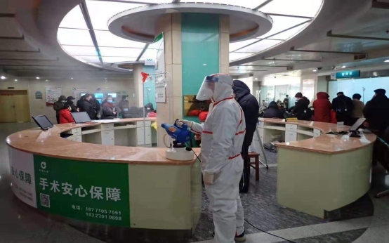
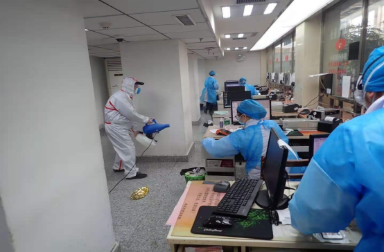

医院消毒防疫
发布时间：2021-07-08 19:27浏览次数：
医院防疫消毒

医院中各种病人密集，各种病原微生物较多，属于重度污染环境，也是传染病高发区。卫生对医疗业至关重要。为了避免可能的二次感染，病人的护理治疗和居住环境必须保持清洁无菌。但是医院、疗养院、诊所和护理中心又是人员聚集的地方，而且往往伴有食物的供应，这些为害虫的驻足和滋生提供了有利条件。因此，从专业杀虫灭鼠公司的角度来讲，应该遵循从源头控制的原则，更多的需要从日常工作中采取预防措施，尽量少用或者不使用化学药剂，同时做好内外部垃圾的清理，减少有害生物的快速传播。
由于医院人流量大，物品包裹携带量较多，同时容易把虫害及虫害卵荚等携带到医院室内孳生和栖息，为了达到有害生物防治的良好效果，逍遥虫控需经过专业研讨，从环境、物理、化学等防制方法对医院所管辖的区域进行全面的有害生物控制。

一. 策略
1、加强对医院建筑和结构的休整；
2、降低虫害可以利用的食物、水分和藏身地；
3、尽可能的采用诸如诱捕和监测器等；
4、精准合理进行化学的控制方法来预防和控制 ；
二. 防制步骤
步骤1：准备事前调查
l 医院内部设施诊断、外部环境状态诊断-了解害虫侵入途径、入侵风险点、栖息店、脆弱区域
l 对医院内外的所有区域进行区域化分类-根据不同区域的不同特点进行管理
l 调查主要孳生害虫-了解孳生频率、栖息程度、不同害虫的习性
l 向医院方免费提供-害虫风险等级评估，综合控制检查报告，会针对如何减低害虫风险，如何预防虫害为您提出相应的建议
步骤2：以安全的药剂和工作方法实施防制
l 老鼠-依据各区域环境特点，采取不同的防鼠系统和药剂消除
l 蟑螂、蚂蚁、跳蚤、臭虫-根据不同害虫的特点选定合适的系统和药剂消除
l 苍蝇、蚊子-使用药剂和先进设备，进行综合管理
l 脆弱区域-随着季节的变化不断变更消除方法，进行重点管理安装专业的灭蝇灯，建立蚊子和苍蝇的防治体系
l 建立多到防线-阻止海城从外至内侵入室内
步骤 3 服务后的监测
l 提供有关服务的书面资料-提供服务报告
l 定期监测-了解害虫是否复发
l 定期勘察服务-预防外部害虫侵入
l 24小时待命-投诉时按预约时间上门处理
三. 医院鼠害预防常识
1、医院装修时天花变成封闭式环境，减少老鼠侵入天花的可能性。
2、做好医院防鼠设施的建设和维修保养，建设封闭式垃圾收集站，垃圾定期清理，并搞好垃圾收集站周边环境卫生。
3、建议医院安装窗户安装防鼠纱窗，并提醒员工下班时应关好门窗，以减少老鼠侵入途径。
4、保持医院环境卫生，垃圾应做到日产日清，员工应将自带食品入柜锁好，以断绝老鼠的食物来源，减少老鼠栖息场所。
5、定期清除房前屋后杂草，排污渠明渠改暗渠，绿化带水泥高砌边，下水道口、沙井、化粪池周边硬底化建设，以消除鼠类栖息场所。

 扫一扫 关注我们
扫一扫 关注我们